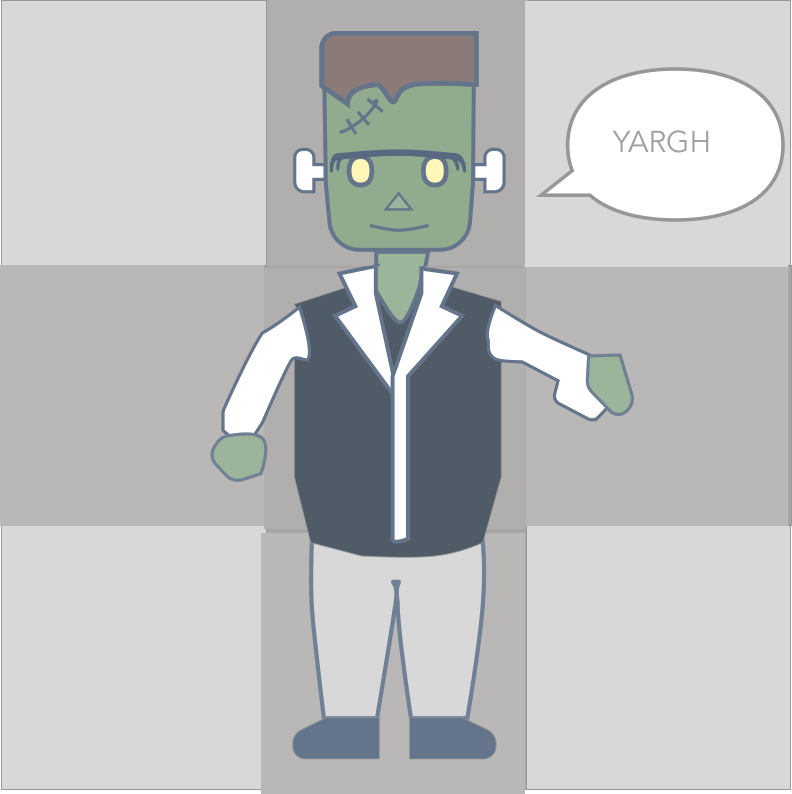

[Home](index.html)
# Juggling Javascript: Challenge
[<< Previous Lesson](lesson-js-2.html)&nbsp;&nbsp;|&nbsp;&nbsp;[Next Lesson >>](lesson-js-challenge-2.html)

<br/>
Halloween is coming up as I am currently writing this.
Given that this challenge will involve the genius of a mad scientist,
and stitching together many different concepts, I've named this
the "Frankenstein Challenge".
##The Goal:
You will be stitching together the frankenstein picture with 6 given pictures.
Additionally, when you click on a body part, it should
print out which body part is clicked.
Bonus: It should be able to move its arms and dance. By Switching its left and right hand
1. Generate 9 boxes that represent left arm, right arm, body, and legs. The pictures are given
in the "img" folder. Resolve the 6 picture to 9 boxes problem.
2. Each click on the Box, allow you to change the Headlines to the clicked box's content,
to represent each arm clicked
##The Concepts:
- Variables
- Loops
- Dom Manipulating
- Functions
- String Manipulation
- Css Knowledge
Get the starter code by checking out the branch
"js-challenge-1" Make sure to save your current work first
```
git add * // Or the name of your specific files
git commit -m "Learned Dom Manipulation"
git push
// Time to checkout new code
git checkout js-challenge-1
```
Read through the instructions and hints,
and try to get to the result below.
If you get absolutely stuck and can't get any help,
There are hints and solution code at the js-challenge-1-solution branch.
Make sure to add, commit, and push to save!
```
git checkout js-challenge-1
```
<iframe width="630" height="394" src="https://www.useloom.com/embed/5945b7daac4a4fb7864b1c5e2290b120" frameborder="0" webkitallowfullscreen mozallowfullscreen allowfullscreen></iframe>
[<< Previous Lesson](lesson-js-2.html)&nbsp;&nbsp;|&nbsp;&nbsp;[Next Lesson >>](lesson-js-challenge-2.html)